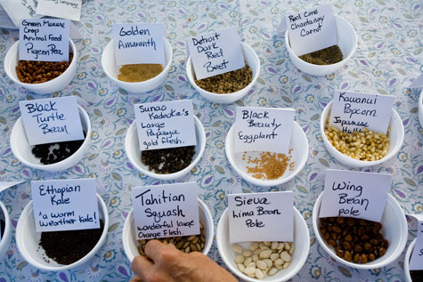

CRAIG ELEVITCH
At local seed exchanges, you may get lucky and find rare seeds that are not available through national seed companies. And they're likely to be better adapted to your gardening region.